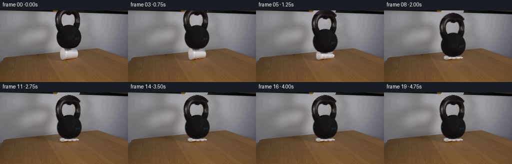
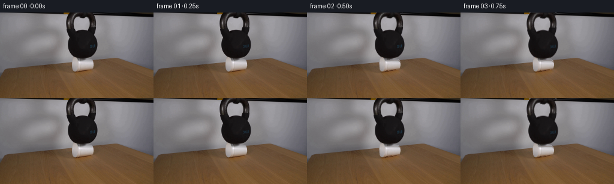
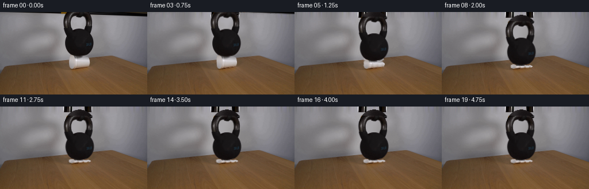
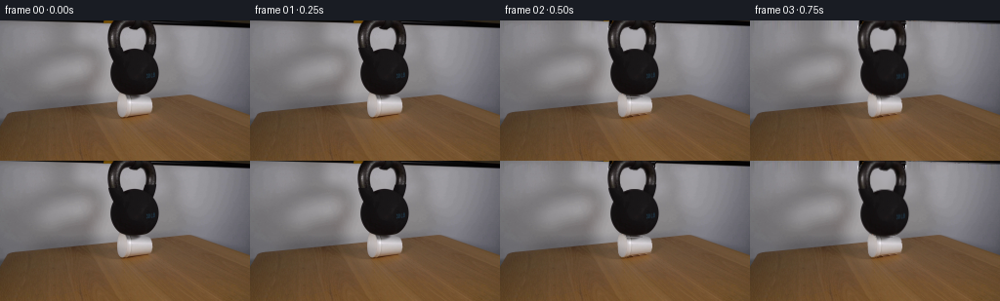
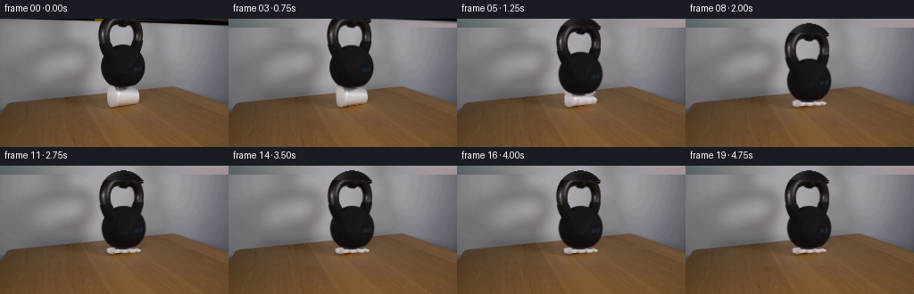
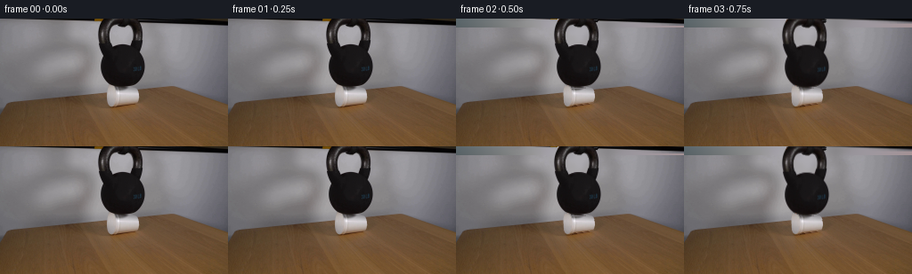

CODING AGENTS AS PIXEL WORLD MODELS
traex/GPT-6.1-Sol · 0190
点击播放 · 原生 RGB 像素
逐轮保存的候选
回放视频、检查图与代码变化。
每份候选均可单独播放。实际图片检查记录在下方工具轨迹中。
候选 01播放与检查图
点击播放 · 原生 RGB 像素


展开代码变化
--- 上一保存版本
+++ 本次保存版本
@@ -0,0 +1,161 @@
+from pathlib import Path
+import numpy as np
+import cv2
+from PIL import Image, ImageDraw
+from scipy.ndimage import gaussian_filter, binary_dilation, label
+import artifact_io
+
+ROOT=Path(__file__).resolve().parent
+H,W=144,256
+Y,X=np.mgrid[:H,:W].astype(np.float32)
+
+def polygon_mask(points):
+ im=Image.new('L',(W*4,H*4))
+ ImageDraw.Draw(im).polygon([(round(x*4),round(y*4)) for x,y in points],fill=255)
+ return np.asarray(im.resize((W,H),Image.Resampling.LANCZOS),dtype=np.float32)/255
+
+def generate():
+ src=np.asarray(Image.open(ROOT/'first_frame.png').convert('RGB')).astype(np.float32)
+ lum=src.mean(2)
+ # Isolate the cast-iron weight, including the real opening and its highlights.
+ bell=np.zeros((H,W),np.float32)
+ for y in range(78):
+ if y<5:
+ edges=[(115.7,158.3),(115.2,157.1),(114.7,158.2),(113.7,157.2),(113.4,156.4)]
+ l,r=edges[y]
+ else:
+ ids=np.where(lum[y,108:164]<115)[0]+108
+ if y>=75: ids=ids[ids<151]
+ if not len(ids):continue
+ l,r=float(ids.min()),float(ids.max())
+ for x in range(max(0,int(l)-1),min(W,int(r)+2)):
+ if x<l-1 or x>r+1:continue
+ if x<=l or x>=r:
+ bgval=float(np.interp(x,[l-2,r+2],[lum[y,max(0,int(l)-2)],lum[y,min(W-1,int(r)+2)]]))
+ if bgval<100:bgval=155
+ bell[y,x]=np.clip((bgval-lum[y,x])/(bgval-22),0,1)
+ else:bell[y,x]=1
+ # The opening is a visible patch of the out-of-focus background, not metal.
+ hole=(lum>120)&(X>=122)&(X<=150)&(Y>=6)&(Y<=31)
+ labs,num=label(hole)
+ hole=labs==labs[18,136]
+ vicinity=binary_dilation(hole,iterations=1)
+ transparent=np.clip((lum-50)/98,0,1)
+ bell[vicinity]*=(1-transparent[vicinity])
+ bell[hole & (lum>=148)]=0
+ bell=gaussian_filter(bell,0.17)
+
+ cup=polygon_mask([(121.2,79),(123.1,76),(126.5,76),(129,79),(131.5,81),
+ (151,80.3),(154.3,82),(155.5,84),(156,88),(155,92.5),(153.8,94),
+ (145,95.3),(133,97),(127,99),(124,98.7),(122,97),(121,94),(120.4,85)])
+ # Restore only the area uncovered by the moving objects. Background pixels
+ # elsewhere remain untouched, keeping the locked-off shot exact.
+ bg=src.copy()
+ remove=(bell>0.01)|(cup>0.01)
+ for y in range(83):
+ xs=np.where(remove[y])[0]
+ if not len(xs):continue
+ l=max(0,xs.min()-2);r=min(W-1,xs.max()+2)
+ if y<7:
+ a=src[8,108];b=src[8,164]
+ else:
+ a=src[y,l];b=src[y,r]
+ for x in range(l+1,r):
+ if remove[y,x]:
+ u=(x-l)/(r-l)
+ # The gray cloth's soft broad vertical highlight continues behind the weight.
+ color=a*(1-u)+b*u
+ color += 7*np.sin(np.pi*u)*np.exp(-((y-21)/29)**2)
+ bg[y,x]=color
+ # The exposed table is reconstructed using its neighboring grain in the same frame.
+ tablemask=np.zeros((H,W),np.uint8)
+ tablemask[82:102,119:159]= (remove[82:102,119:159]*255).astype(np.uint8)
+ table=cv2.inpaint(src.astype(np.uint8),tablemask,4,cv2.INPAINT_TELEA).astype(np.float32)
+ for y in range(83,102):
+ for x in range(118,160):
+ if remove[y,x]:bg[y,x]=table[y,x]
+ # Remove the formerly cast shadow only in the reconstructed cup footprint.
+ # Its surrounding photograph remains intact.
+
+ # Recover edge colors from antialiasing against the original backdrop.
+ bell_rgb=src.copy()
+ soft=(bell>0.025)&(bell<0.995)
+ bell_rgb[soft]=np.clip((src[soft]-bg[soft]*(1-bell[soft,None]))/np.maximum(bell[soft,None],.06),0,255)
+ bell_rgb[bell<=.025]=0
+
+ # Extend the cropped top of the curved handle with matching cast-iron shading.
+ ext=14
+ B=np.zeros((H+ext,W,3),np.float32)
+ A=np.zeros((H+ext,W),np.float32)
+ B[ext:]=bell_rgb;A[ext:]=bell
+ rng=np.random.default_rng(190)
+ for ey in range(ext):
+ yy=ey-ext
+ q=1-((yy-14)/25.2)**2
+ if q<=0:continue
+ rad=26*np.sqrt(q)
+ for x in range(W):
+ dist=rad-abs(x-137)
+ alpha=np.clip(dist+.5,0,1)
+ if not alpha:continue
+ shade=21 + 22*np.exp(-((x-123)/9)**2)+4*np.exp(-((yy+9)/2)**2)
+ # Match the lower handle's warmer, almost black, rough iron finish.
+ v=shade+rng.normal(0,1.2)
+ B[ey,x]=[v+2,v-2,v-1]
+ A[ey,x]=alpha
+
+ result=[src.astype(np.uint8)]
+ displacements=[0,.0,.12,.65,2.6,8.3,14.3,16.4,15.8,16.05,16.16,16.12,16.12,16.12,16.12,16.12,16.12,16.12,16.12,16.12]
+ angles=[0,0,.02,.06,.22,.7,.95,.45,.15,.27,.24,.24,.24,.24,.24,.24,.24,.24,.24,.24]
+ grain=rng.normal(0,.5,(H,W)).astype(np.float32)
+ for i in range(1,20):
+ drop=displacements[i]
+ comp=drop/16.4
+ if drop==0:
+ result.append(src.astype(np.uint8));continue
+ frame=bg.copy()
+ # A progressively smaller, darker contact shadow accompanies compression.
+ shadow=np.exp(-((X-138.3)/23)**2-((Y-98.0)/2.6)**2)*(.15*comp)
+ shadow*=((cup<.01)&(Y>93)&(X>116)&(X<163))
+ frame*=1-shadow[:,:,None]
+
+ # Inverse deformation of the foam wall: the base stays on the tabletop,
+ # the rim follows the falling weight, and shallow buckles form in the wall.
+ s=1-drop/23.1
+ sx=1+.075*comp
+ cx=137.8
+ src_x=cx+(X-cx-.32*comp)/sx
+ dstfrac=np.clip((98-Y)/max(1,23*s),0,1)
+ folds=(np.sin((src_x-120)*.74)+.38*np.sin((src_x-121)*1.6))
+ yoffset=.68*comp*folds*np.sin(np.pi*dstfrac)
+ src_y=98-(98-Y+yoffset)/s
+ src_x+=.6*comp*np.sin((src_y-78)*.64)*np.sin(np.pi*dstfrac)
+ C=cv2.remap(src,src_x.astype(np.float32),src_y.astype(np.float32),cv2.INTER_LINEAR,borderMode=cv2.BORDER_CONSTANT)
+ CA=cv2.remap(cup,src_x.astype(np.float32),src_y.astype(np.float32),cv2.INTER_LINEAR,borderMode=cv2.BORDER_CONSTANT)
+ # The small-scale original foam texture is retained on the compressed folds.
+ shade=comp*(4.5*np.sin((src_x-120)*.75)+3*np.sin((src_y-78)*1.3))
+ C=np.clip(C+shade[:,:,None],0,255)
+ frame=frame*(1-CA[:,:,None])+C*CA[:,:,None]
+
+ # Rigid descent and tiny, damped rocking of the iron weight.
+ theta=np.deg2rad(angles[i])
+ dx=.65*comp
+ px,py=137.5,75.5
+ ox=X-px-dx;oy=Y-py-drop
+ mx=px+np.cos(theta)*ox+np.sin(theta)*oy
+ my=py-np.sin(theta)*ox+np.cos(theta)*oy+ext
+ BA=cv2.remap(A,mx.astype(np.float32),my.astype(np.float32),cv2.INTER_LINEAR,borderMode=cv2.BORDER_CONSTANT)
+ BC=cv2.remap(B,mx.astype(np.float32),my.astype(np.float32),cv2.INTER_LINEAR,borderMode=cv2.BORDER_CONSTANT)
+ # A subpixel soft contact darkening appears under the iron's broad base.
+ contact=np.exp(-((X-(138+dx))/14)**4-((Y-(77+drop))/1.0)**2)*.2*comp
+ frame*=1-contact[:,:,None]
+ frame=frame*(1-BA[:,:,None])+BC*BA[:,:,None]
+ # Low amplitude sensor variation is limited to the actually altered region.
+ altered=remove|(CA>.01)|(BA>.01)
+ frame+=grain[:,:,None]*altered[:,:,None]*.16*comp
+ result.append(np.clip(np.rint(frame),0,255).astype(np.uint8))
+ return np.stack(result)
+
+if __name__=='__main__':
+ frames=generate()
+ artifact_io.save(frames,ROOT)
候选 02播放与检查图
点击播放 · 原生 RGB 像素


展开代码变化
--- 上一保存版本
+++ 本次保存版本
@@ -3,6 +3,7 @@
import cv2
from PIL import Image, ImageDraw
from scipy.ndimage import gaussian_filter, binary_dilation, label
+from scipy.interpolate import RBFInterpolator
import artifact_io
ROOT=Path(__file__).resolve().parent
@@ -52,21 +53,39 @@
# elsewhere remain untouched, keeping the locked-off shot exact.
bg=src.copy()
remove=(bell>0.01)|(cup>0.01)
- for y in range(83):
- xs=np.where(remove[y])[0]
- if not len(xs):continue
- l=max(0,xs.min()-2);r=min(W-1,xs.max()+2)
- if y<7:
- a=src[8,108];b=src[8,164]
- else:
- a=src[y,l];b=src[y,r]
- for x in range(l+1,r):
- if remove[y,x]:
- u=(x-l)/(r-l)
- # The gray cloth's soft broad vertical highlight continues behind the weight.
- color=a*(1-u)+b*u
- color += 7*np.sin(np.pi*u)*np.exp(-((y-21)/29)**2)
- bg[y,x]=color
+ hull=bell.copy()
+ for y in range(78):
+ xx=np.where(bell[y]>.01)[0]
+ if len(xx):hull[y,xx.min():xx.max()+1]=1
+ # Smoothly interpolate the cloth from both sides and from the handle opening.
+ # Its real luminance profile, rather than a flat patch, remains visible as the
+ # handle travels down the scene.
+ coords=[];values=[]
+ for y in range(8,86,3):
+ for x in range(96,183,3):
+ if bell[y,x]<.01 and cup[y,x]<.01 and not remove[max(0,y-1):y+2,max(0,x-1):x+2].any():
+ if y<78 or x<115 or x>166:
+ coords.append([x/26,y/26]);values.append(src[y,x])
+ interp=RBFInterpolator(np.array(coords),np.array(values),smoothing=.018,kernel='thin_plate_spline')
+ q=interp(np.c_[X.ravel()/26,Y.ravel()/26]).reshape(H,W,3).astype(np.float32)
+ bg[(hull>0)&(Y<83)]=q[(hull>0)&(Y<83)]
+ # The very top of the photograph includes the demonstrator's cropped hands.
+ # Keep their photographed appearance in the first frame, then let them move
+ # naturally upwards out of view when the weight is released.
+ topclean=src.copy()
+ for y in range(10):
+ topclean[y]=np.clip(src[10]+(src[10]-src[14])*(10-y)/4,0,255)
+ topmask=np.zeros((H,W),np.float32)
+ for y in range(10):
+ delta=topclean[y].mean(1)-lum[y]
+ topmask[y]=np.clip((delta-3)/30,0,1)
+ topmask*=1-hull
+ topmask=gaussian_filter(topmask,.22)
+ bg[:10]=topclean[:10]
+ top_rgb=src.copy()
+ softtop=(topmask>.025)&(topmask<.995)
+ top_rgb[softtop]=np.clip((src[softtop]-topclean[softtop]*(1-topmask[softtop,None]))/np.maximum(.06,topmask[softtop,None]),0,255)
+ top_rgb[topmask<.025]=0
# The exposed table is reconstructed using its neighboring grain in the same frame.
tablemask=np.zeros((H,W),np.uint8)
tablemask[82:102,119:159]= (remove[82:102,119:159]*255).astype(np.uint8)
@@ -114,6 +133,10 @@
if drop==0:
result.append(src.astype(np.uint8));continue
frame=bg.copy()
+ hand_up=min(12,max(0,(i/4-.3)*10))
+ TA=cv2.remap(topmask,X,Y+hand_up,cv2.INTER_LINEAR,borderMode=cv2.BORDER_CONSTANT)
+ TC=cv2.remap(top_rgb,X,Y+hand_up,cv2.INTER_LINEAR,borderMode=cv2.BORDER_CONSTANT)
+ frame=frame*(1-TA[:,:,None])+TC*TA[:,:,None]
# A progressively smaller, darker contact shadow accompanies compression.
shadow=np.exp(-((X-138.3)/23)**2-((Y-98.0)/2.6)**2)*(.15*comp)
shadow*=((cup<.01)&(Y>93)&(X>116)&(X<163))
候选 03播放与检查图
点击播放 · 原生 RGB 像素


展开代码变化
--- 上一保存版本
+++ 本次保存版本
@@ -73,19 +73,15 @@
# Keep their photographed appearance in the first frame, then let them move
# naturally upwards out of view when the weight is released.
topclean=src.copy()
- for y in range(10):
- topclean[y]=np.clip(src[10]+(src[10]-src[14])*(10-y)/4,0,255)
+ topclean[:10]=np.clip(q[:10],0,255)
topmask=np.zeros((H,W),np.float32)
for y in range(10):
delta=topclean[y].mean(1)-lum[y]
topmask[y]=np.clip((delta-3)/30,0,1)
topmask*=1-hull
- topmask=gaussian_filter(topmask,.22)
+ topmask=gaussian_filter(topmask,.17)
bg[:10]=topclean[:10]
- top_rgb=src.copy()
- softtop=(topmask>.025)&(topmask<.995)
- top_rgb[softtop]=np.clip((src[softtop]-topclean[softtop]*(1-topmask[softtop,None]))/np.maximum(.06,topmask[softtop,None]),0,255)
- top_rgb[topmask<.025]=0
+ top_rgb=src*topmask[:,:,None]
# The exposed table is reconstructed using its neighboring grain in the same frame.
tablemask=np.zeros((H,W),np.uint8)
tablemask[82:102,119:159]= (remove[82:102,119:159]*255).astype(np.uint8)
@@ -136,7 +132,7 @@
hand_up=min(12,max(0,(i/4-.3)*10))
TA=cv2.remap(topmask,X,Y+hand_up,cv2.INTER_LINEAR,borderMode=cv2.BORDER_CONSTANT)
TC=cv2.remap(top_rgb,X,Y+hand_up,cv2.INTER_LINEAR,borderMode=cv2.BORDER_CONSTANT)
- frame=frame*(1-TA[:,:,None])+TC*TA[:,:,None]
+ frame=frame*(1-TA[:,:,None])+TC
# A progressively smaller, darker contact shadow accompanies compression.
shadow=np.exp(-((X-138.3)/23)**2-((Y-98.0)/2.6)**2)*(.15*comp)
shadow*=((cup<.01)&(Y>93)&(X>116)&(X<163))
可观测工具轨迹
实际执行的命令与返回图片。
命令 1exit 0
/bin/bash -lc 'ls -la && cat prompt.txt && cat GENERATION_RULES.md'
命令 2exit 0
/bin/bash -lc "cat artifact_io.py && python - <<'PY'
from PIL import Image
import numpy as np
im=np.array(Image.open('first_frame.png'));print('shape',im.shape)
# sample coarse average colors
for y in range(0,144,8):
print('y',y,':',' '.join('%d,%d,%d'%tuple(np.mean(im[y:y+8,x:x+8],axis=(0,1)).astype(int)) for x in range(0,256,8)))
PY"命令 3exit 0
/bin/bash -lc "python - <<'PY'
import numpy as np
from PIL import Image
im=np.array(Image.open('first_frame.png')).astype(float)
chars=' .:-=+*#%@'
print('LUMA CROP x95-179, y0-107, 1pix')
for y in range(0,108):
s=''
for x in range(95,180):
r,g,b=im[y,x]; l=(r+g+b)/3
if max(r,g,b)-min(r,g,b)>16 and r>g+7:s+='t' if l<150 else 'H'
else:s+=chars[min(9,int(l/256*10))]
print('%03d '%y+s)
PY"命令 4exit 0
/bin/bash -lc "python - <<'PY'
import numpy as np
from PIL import Image
im=np.array(Image.open('first_frame.png')).astype(int)
for y in range(70,103):
print('%03d'%y,end=' ')
for x in range(110,169):
r,g,b=im[y,x]; l=(r+g+b)/3
s=' '
if r-g>10 and g-b>8: s='t' if l<130 else 'c' if l<170 else 's'
elif l<50:s='K'
elif l<90:s='d'
elif l<130:s='g'
elif l<165:s='o'
elif l<190:s='O'
elif l<215:s='W'
elif l<240:s='@'
else:s='#'
print(s,end='')
print()
print('White pixels intervals')
for y in range(70,102):
l=im[y].mean(-1);xs=np.where((l>170)&(np.arange(256)>112)&(np.arange(256)<166))[0]
if len(xs):print(y, xs.min(),xs.max(),im[y,xs].mean(0))
print('RGB x120-160 every2 y78-98:')
for y in range(78,100,2):
print(y,[(x,im[y,x].tolist()) for x in range(120,162,2)])
PY"命令 5exit 0
/bin/bash -lc "python - <<'PY'
from PIL import Image
import numpy as np
im=np.array(Image.open('first_frame.png')).astype(int)
for y in range(0,8):print(y,[(x,im[y,x].tolist()) for x in range(100,124)])
print('cup region')
for y in range(73,101):
print(y, ''.join(' ' if im[y,x].mean()<130 else str(min(9,int((im[y,x].mean()-130)/12))) for x in range(115,165)))
print('Dark intervals')
for y in range(0,78):
xs=np.where(im[y,95:175].mean(-1)<70)[0]+95
if len(xs):print(y,xs.min(),xs.max())
PY"命令 6exit 0
/bin/bash -lc "python - <<'PY'
import numpy as np
from PIL import Image
im=np.array(Image.open('first_frame.png'));chars=' .:-=+*#%@'
for y in range(0,35):
print('%02d '%y+''.join(chars[min(9,int(v))] for v in im[y,108:166].mean(-1)/26))
print('upper central RGB')
for y in range(10): print(y,[(x,im[y,x].tolist()) for x in range(124,152,2)])
PY"命令 7exit 0
/bin/bash -lc "python - <<'PY'
import numpy as np
from PIL import Image
im=np.array(Image.open('first_frame.png'))
for y in [0,1,2,3,4,5]:print(y,[(x,im[y,x].tolist()) for x in range(0,256,8)])
PY"命令 8exit 0
/bin/bash -lc "python - <<'PY' import importlib.util for n in ['cv2','scipy','numpy','PIL']:print(n, bool(importlib.util.find_spec(n))) PY"
命令 9exit 0
/bin/bash -lc "python - <<'PY'
from PIL import Image
import numpy as np
im=np.asarray(Image.open('first_frame.png')).astype(float);l=im.mean(-1)
for y in range(0,78):
xs=np.where(l[y,108:165]<115)[0]+108
if y<4:continue
# external bell edges
print(y,xs.min(),xs.max(), 'edgeRGB',im[y,xs.min()].astype(int),im[y,xs.max()].astype(int))
PY"命令 10exit 0
/bin/bash -lc "python - <<'PY'
import numpy as np
from PIL import Image
im=np.array(Image.open('first_frame.png')).astype(int)
for y in [10,15,20,25,28,29,30,31,32,36,40,45,50,60,70,74,75,76,77,78,79]:
print(y, ' '.join('%d:%d'% (x,im[y,x].mean()) for x in range(107,168)))
PY"命令 11exit 0
/bin/bash -lc "cat > generate.py <<'PY'
from pathlib import Path
import numpy as np
import cv2
from PIL import Image, ImageDraw
from scipy.ndimage import gaussian_filter, binary_dilation, label
import artifact_io
ROOT=Path(__file__).resolve().parent
H,W=144,256
Y,X=np.mgrid[:H,:W].astype(np.float32)
def polygon_mask(points):
im=Image.new('L',(W*4,H*4))
ImageDraw.Draw(im).polygon([(round(x*4),round(y*4)) for x,y in points],fill=255)
return np.asarray(im.resize((W,H),Image.Resampling.LANCZOS),dtype=np.float32)/255
def generate():
src=np.asarray(Image.open(ROOT/'first_frame.png').convert('RGB')).astype(np.float32)
lum=src.mean(2)
# Isolate the cast-iron weight, including the real opening and its highlights.
bell=np.zeros((H,W),np.float32)
for y in range(78):
if y<5:
edges=[(115.7,158.3),(115.2,157.1),(114.7,158.2),(113.7,157.2),(113.4,156.4)]
l,r=edges[y]
else:
ids=np.where(lum[y,108:164]<115)[0]+108
if y>=75: ids=ids[ids<151]
if not len(ids):continue
l,r=float(ids.min()),float(ids.max())
for x in range(max(0,int(l)-1),min(W,int(r)+2)):
if x<l-1 or x>r+1:continue
if x<=l or x>=r:
bgval=float(np.interp(x,[l-2,r+2],[lum[y,max(0,int(l)-2)],lum[y,min(W-1,int(r)+2)]]))
if bgval<100:bgval=155
bell[y,x]=np.clip((bgval-lum[y,x])/(bgval-22),0,1)
else:bell[y,x]=1
# The opening is a visible patch of the out-of-focus background, not metal.
hole=(lum>120)&(X>=122)&(X<=150)&(Y>=6)&(Y<=31)
labs,num=label(hole)
hole=labs==labs[18,136]
vicinity=binary_dilation(hole,iterations=1)
transparent=np.clip((lum-50)/98,0,1)
bell[vicinity]*=(1-transparent[vicinity])
bell[hole & (lum>=148)]=0
bell=gaussian_filter(bell,0.17)
cup=polygon_mask([(121.2,79),(123.1,76),(126.5,76),(129,79),(131.5,81),
(151,80.3),(154.3,82),(155.5,84),(156,88),(155,92.5),(153.8,94),
(145,95.3),(133,97),(127,99),(124,98.7),(122,97),(121,94),(120.4,85)])
# Restore only the area uncovered by the moving objects. Background pixels
# elsewhere remain untouched, keeping the locked-off shot exact.
bg=src.copy()
remove=(bell>0.01)|(cup>0.01)
for y in range(83):
xs=np.where(remove[y])[0]
if not len(xs):continue
l=max(0,xs.min()-2);r=min(W-1,xs.max()+2)
if y<7:
a=src[8,108];b=src[8,164]
else:
a=src[y,l];b=src[y,r]
for x in range(l+1,r):
if remove[y,x]:
u=(x-l)/(r-l)
# The gray cloth's soft broad vertical highlight continues behind the weight.
color=a*(1-u)+b*u
color += 7*np.sin(np.pi*u)*np.exp(-((y-21)/29)**2)
bg[y,x]=color
# The exposed table is reconstructed using its neighboring grain in the same frame.
tablemask=np.zeros((H,W),np.uint8)
tablemask[82:102,119:159]= (remove[82:102,119:159]*255).astype(np.uint8)
table=cv2.inpaint(src.astype(np.uint8),tablemask,4,cv2.INPAINT_TELEA).astype(np.float32)
for y in range(83,102):
for x in range(118,160):
if remove[y,x]:bg[y,x]=table[y,x]
# Remove the formerly cast shadow only in the reconstructed cup footprint.
# Its surrounding photograph remains intact.
# Recover edge colors from antialiasing against the original backdrop.
bell_rgb=src.copy()
soft=(bell>0.025)&(bell<0.995)
bell_rgb[soft]=np.clip((src[soft]-bg[soft]*(1-bell[soft,None]))/np.maximum(bell[soft,None],.06),0,255)
bell_rgb[bell<=.025]=0
# Extend the cropped top of the curved handle with matching cast-iron shading.
ext=14
B=np.zeros((H+ext,W,3),np.float32)
A=np.zeros((H+ext,W),np.float32)
B[ext:]=bell_rgb;A[ext:]=bell
rng=np.random.default_rng(190)
for ey in range(ext):
yy=ey-ext
q=1-((yy-14)/25.2)**2
if q<=0:continue
rad=26*np.sqrt(q)
for x in range(W):
dist=rad-abs(x-137)
alpha=np.clip(dist+.5,0,1)
if not alpha:continue
shade=21 + 22*np.exp(-((x-123)/9)**2)+4*np.exp(-((yy+9)/2)**2)
# Match the lower handle's warmer, almost black, rough iron finish.
v=shade+rng.normal(0,1.2)
B[ey,x]=[v+2,v-2,v-1]
A[ey,x]=alpha
result=[src.astype(np.uint8)]
displacements=[0,.0,.12,.65,2.6,8.3,14.3,16.4,15.8,16.05,16.16,16.12,16.12,16.12,16.12,16.12,16.12,16.12,16.12,16.12]
angles=[0,0,.02,.06,.22,.7,.95,.45,.15,.27,.24,.24,.24,.24,.24,.24,.24,.24,.24,.24]
grain=rng.normal(0,.5,(H,W)).astype(np.float32)
for i in range(1,20):
drop=displacements[i]
comp=drop/16.4
if drop==0:
result.append(src.astype(np.uint8));continue
frame=bg.copy()
# A progressively smaller, darker contact shadow accompanies compression.
shadow=np.exp(-((X-138.3)/23)**2-((Y-98.0)/2.6)**2)*(.15*comp)
shadow*=((cup<.01)&(Y>93)&(X>116)&(X<163))
frame*=1-shadow[:,:,None]
# Inverse deformation of the foam wall: the base stays on the tabletop,
# the rim follows the falling weight, and shallow buckles form in the wall.
s=1-drop/23.1
sx=1+.075*comp
cx=137.8
src_x=cx+(X-cx-.32*comp)/sx
dstfrac=np.clip((98-Y)/max(1,23*s),0,1)
folds=(np.sin((src_x-120)*.74)+.38*np.sin((src_x-121)*1.6))
yoffset=.68*comp*folds*np.sin(np.pi*dstfrac)
src_y=98-(98-Y+yoffset)/s
src_x+=.6*comp*np.sin((src_y-78)*.64)*np.sin(np.pi*dstfrac)
C=cv2.remap(src,src_x.astype(np.float32),src_y.astype(np.float32),cv2.INTER_LINEAR,borderMode=cv2.BORDER_CONSTANT)
CA=cv2.remap(cup,src_x.astype(np.float32),src_y.astype(np.float32),cv2.INTER_LINEAR,borderMode=cv2.BORDER_CONSTANT)
# The small-scale original foam texture is retained on the compressed folds.
shade=comp*(4.5*np.sin((src_x-120)*.75)+3*np.sin((src_y-78)*1.3))
C=np.clip(C+shade[:,:,None],0,255)
frame=frame*(1-CA[:,:,None])+C*CA[:,:,None]
# Rigid descent and tiny, damped rocking of the iron weight.
theta=np.deg2rad(angles[i])
dx=.65*comp
px,py=137.5,75.5
ox=X-px-dx;oy=Y-py-drop
mx=px+np.cos(theta)*ox+np.sin(theta)*oy
my=py-np.sin(theta)*ox+np.cos(theta)*oy+ext
BA=cv2.remap(A,mx.astype(np.float32),my.astype(np.float32),cv2.INTER_LINEAR,borderMode=cv2.BORDER_CONSTANT)
BC=cv2.remap(B,mx.astype(np.float32),my.astype(np.float32),cv2.INTER_LINEAR,borderMode=cv2.BORDER_CONSTANT)
# A subpixel soft contact darkening appears under the iron's broad base.
contact=np.exp(-((X-(138+dx))/14)**4-((Y-(77+drop))/1.0)**2)*.2*comp
frame*=1-contact[:,:,None]
frame=frame*(1-BA[:,:,None])+BC*BA[:,:,None]
# Low amplitude sensor variation is limited to the actually altered region.
altered=remove|(CA>.01)|(BA>.01)
frame+=grain[:,:,None]*altered[:,:,None]*.16*comp
result.append(np.clip(np.rint(frame),0,255).astype(np.uint8))
return np.stack(result)
if __name__=='__main__':
frames=generate()
artifact_io.save(frames,ROOT)
PY
python generate.py"命令 12exit 0
/bin/bash -lc "python - <<'PY'
import numpy as np
from PIL import Image
for n in [0,4,5,6,7,19]:
im=np.array(Image.open('frames/%02d.png'%n));chs=' .:-=+*#%@'
print('FRAME',n)
for y in range(0,105,2):
print('%03d '%y+''.join(chs[min(9,int(l/26))] for l in im[y,104:171].mean(-1)))
print('Validation')
f=[np.array(Image.open('frames/%02d.png'%i)) for i in range(20)];print(np.array_equal(f[0],np.array(Image.open('first_frame.png'))))
for i in range(1,20):print(i, 'changed',np.count_nonzero(np.any(f[i]"'!=f[i-1],-1)), '"'MAE',np.mean(np.abs(f[i].astype(float)-f[i-1])))
PY"命令 13exit 0
/bin/bash -lc "python - <<'PY'
p='generate.py'
s=open(p).read().replace('from scipy.ndimage import gaussian_filter, binary_dilation, label','from scipy.ndimage import gaussian_filter, binary_dilation, label\\nfrom scipy.interpolate import RBFInterpolator')
start=s.index(' for y in range(83):')
end=s.index(' # The exposed table',start)
s=s[:start]+''' hull=bell.copy()
for y in range(78):
xx=np.where(bell[y]>.01)[0]
if len(xx):hull[y,xx.min():xx.max()+1]=1
# Smoothly interpolate the cloth from both sides and from the handle opening.
# Its real luminance profile, rather than a flat patch, remains visible as the
# handle travels down the scene.
coords=[];values=[]
for y in range(8,86,3):
for x in range(96,183,3):
if bell[y,x]<.01 and cup[y,x]<.01 and not remove[max(0,y-1):y+2,max(0,x-1):x+2].any():
if y<78 or x<115 or x>166:
coords.append([x/26,y/26]);values.append(src[y,x])
interp=RBFInterpolator(np.array(coords),np.array(values),smoothing=.018,kernel='thin_plate_spline')
q=interp(np.c_[X.ravel()/26,Y.ravel()/26]).reshape(H,W,3).astype(np.float32)
bg[(hull>0)&(Y<83)]=q[(hull>0)&(Y<83)]
# The very top of the photograph includes the demonstrator's cropped hands.
# Keep their photographed appearance in the first frame, then let them move
# naturally upwards out of view when the weight is released.
topclean=src.copy()
for y in range(10):
topclean[y]=np.clip(src[10]+(src[10]-src[14])*(10-y)/4,0,255)
topmask=np.zeros((H,W),np.float32)
for y in range(10):
delta=topclean[y].mean(1)-lum[y]
topmask[y]=np.clip((delta-3)/30,0,1)
topmask*=1-hull
topmask=gaussian_filter(topmask,.22)
bg[:10]=topclean[:10]
top_rgb=src.copy()
softtop=(topmask>.025)&(topmask<.995)
top_rgb[softtop]=np.clip((src[softtop]-topclean[softtop]*(1-topmask[softtop,None]))/np.maximum(.06,topmask[softtop,None]),0,255)
top_rgb[topmask<.025]=0
''' +s[end:]
s=s.replace(' frame=bg.copy()',''' frame=bg.copy()
hand_up=min(12,max(0,(i/4-.3)*10))
TA=cv2.remap(topmask,X,Y+hand_up,cv2.INTER_LINEAR,borderMode=cv2.BORDER_CONSTANT)
TC=cv2.remap(top_rgb,X,Y+hand_up,cv2.INTER_LINEAR,borderMode=cv2.BORDER_CONSTANT)
frame=frame*(1-TA[:,:,None])+TC*TA[:,:,None]''')
# pad interface movement: interpolate extension to actual handle row0 with x based varying highlight
s=s.replace('shade=21 + 22*np.exp(-((x-123)/9)**2)+4*np.exp(-((yy+9)/2)**2)','shade=21 + 22*np.exp(-((x-123)/9)**2)+4*np.exp(-((yy+9)/2)**2)')
open(p,'w').write(s)
PY
python generate.py"命令 14exit 0
/bin/bash -lc "python - <<'PY'
import numpy as np
from PIL import Image
for n in [2,6,19]:
a=np.array(Image.open('frames/%02d.png'%n));print('frame',n)
for y in range(0,105,3):
print('%03d '%y+''.join(' .:-=+*#%@'[min(9,int(v/26))] for v in a[y,103:168].mean(1)))
z=np.load('pixels.npz');p=z['pixels'];print('Packed tensor:',p.shape,p.dtype)
orig=np.array(Image.open('first_frame.png'));f=np.array(Image.open('frames/00.png'));assert np.array_equal(f,orig)
assert p.shape==(144,256,20)
print('Frame 00 exact; 20 frames validated.')
PY"命令 15exit 0
/bin/bash -lc "python - <<'PY'
p='generate.py';s=open(p).read();a=s.index(' topclean=src.copy()');b=s.index(' # The exposed table',a)
s=s[:a]+''' topclean=src.copy()
topclean[:10]=np.clip(q[:10],0,255)
topmask=np.zeros((H,W),np.float32)
for y in range(10):
delta=topclean[y].mean(1)-lum[y]
topmask[y]=np.clip((delta-3)/30,0,1)
topmask*=1-hull
topmask=gaussian_filter(topmask,.17)
bg[:10]=topclean[:10]
top_rgb=src*topmask[:,:,None]
''' + s[b:]
s=s.replace('frame=frame*(1-TA[:,:,None])+TC*TA[:,:,None]','frame=frame*(1-TA[:,:,None])+TC')
open(p,'w').write(s)
PY
python generate.py
python - <<'PY'
from PIL import Image
import numpy as np
im=np.array(Image.open('frames/19.png'))
for y in range(0,26,2):print(y,''.join(' .:-=+*#%@'[min(9,int(v/26))] for v in im[y,100:170].mean(1)))
PY"保存候选 3 份；完成命令 15 次；可验证图片返回 0 张。原始 API 响应与完整日志保留在本地。